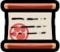

GAMATOTO EXPEDITION(ЭКСПЕДИЦИЯ ГАМАТОТО)
Экспедиция Гаматото (ガマトト探検隊, Gamatoto Tanken-tai, Gamatoto Expedition Troops) — это функция, добавленная в версии 5.0 игр Nyanko Daisensou и The Battle Cats, которая позволяет игрокам отправлять «кота» по имени ГАМАТОТО в экспедиции в поисках полезных предметов. GAMATOTO позволяет игрокам получать бесплатный опыт, кошачью еду и т.д., не делая ничего другого. Эта функция разблокируется после прохождения Греции/Сиги в Империи кошек.


Treasure(Сокровище)
Сокровище — это важная награда этапа, которую можно получить после прохождения одного из основных этапов истории. На каждом этапе есть Сокровище, названное в честь сувенира из локации, хотя вместо изображений используются стандартные значки. Каждое сокровище существует на трех уровнях: «Низший», «Нормальный» и «Высший» — их значки окрашены в бронзовый, серебряный и золотой цвета соответственно. Сокровища чрезвычайно важны на протяжении всей игры, и перед продолжением игры рекомендуется собрать их все.
User rank(Ранг пользователя)
Счетчик ранга пользователя (или UR) разблокируется после прохождения Кореи/Нагасаки в главе 1 «Империи кошек». Впервые он появился в версии 3.0 японской версии и 2.0.1 английской версии. Эта функция предоставляет игроку различные награды: от увеличения максимального уровня юнитов до бонусов к полезным предметам, таким как редкие кошачьи билеты, боевые предметы или кошачьи глаза. Счетчик ранга пользователя находится в верхнем левом углу меню Cat Base.
Missions(Миссии)
Испытания кошачьей мяты, кошачьи миссии (にゃんこミッション, Nyanko Misshon) или просто миссии — это функция типа квестов, добавленная в версии 6.2. Доступ к миссиям можно получить из меню Cat Base в любое время.